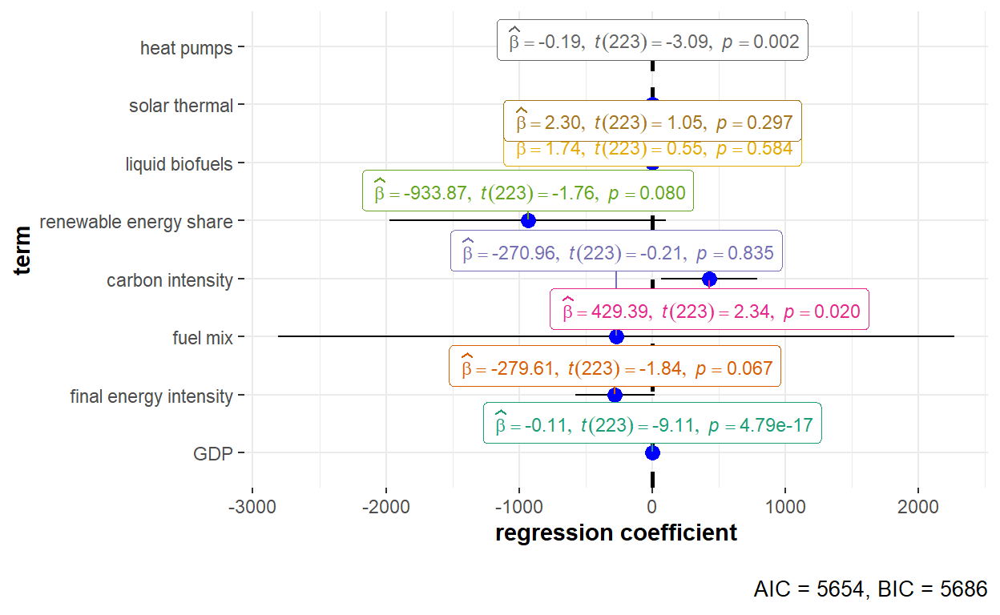
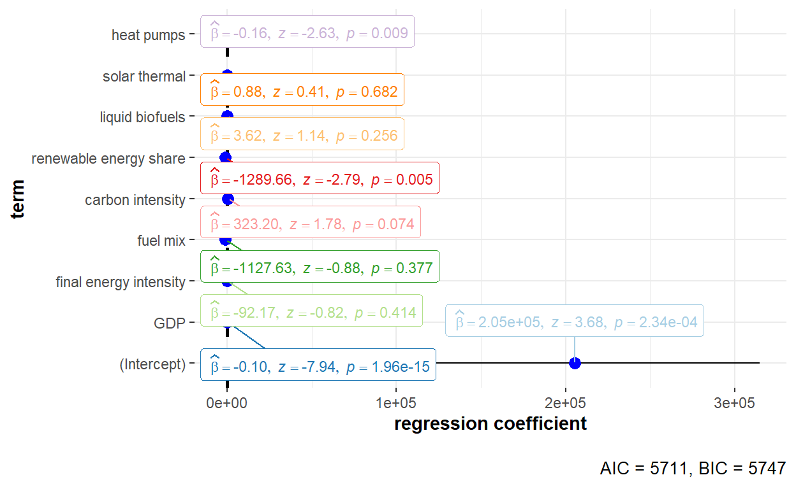
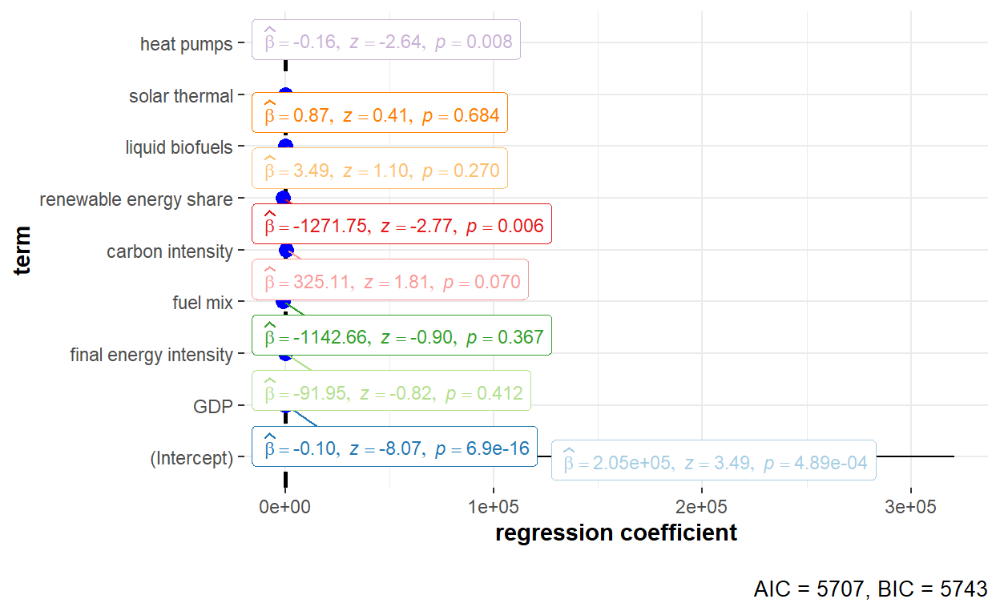
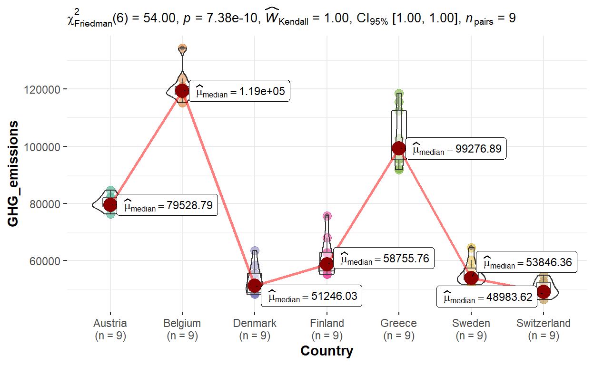

1.0 Overview
1.1 Background
Climate change is affecting every parts of the world, causing dire consequences from more frequent extreme weather events to rising sea levels. In December 2020, the European Union (EU) leaders committed to an ambitious goal of reducing greenhouse gases by 55% by 2030 to tackle climate change. The European Union has been collating climate change-related data across various domains covering greenhouse gas (GHG) emission levels, drivers and mitigation of these emissions, and publishing the data on Eurostat. The statistics allowed for analysing and monitoring of climate change, which is essential for tracking EU’s progress towards achieving its 2030 goal.
1.2 Purpose of Visualisation
Panel data analysis is a statistical method to analyse longitudinal data that contains observations with multiple dimensions measured repeatedly over time. Many papers have been published by different authors on investigating the determinants of greenhouse gas emissions in the EU through panel data models. Some examples of these papers are listed below:
- González-Sánchez, M., & Martín-Ortega, J. (2020). Greenhouse Gas Emissions Growth in Europe: A Comparative Analysis of Determinants. Sustainability (Basel, Switzerland), 12(3), 1012–. https://doi.org/10.3390/su12031012
- Dogan, E., & Seker, F. (2016). An investigation on the determinants of carbon emissions for OECD countries: empirical evidence from panel models robust to heterogeneity and cross-sectional dependence. Environmental Science and Pollution Research International, 23(14), 14646–14655. https://doi.org/10.1007/s11356-016-6632-2
- Azevedo, I., Horta, I., & Leal, V. (2017). Analysis of the relationship between local climate change mitigation actions and greenhouse gas emissions – Empirical insights. Energy Policy, 111, 204–213. https://doi.org/10.1016/j.enpol.2017.09.032
Tabular forms were often adopted when presenting the findings from the panel models as well as the results of the various validation tests performed for the panel models. This exercise aims to visualise the results of the panel models and the validation tests interactively, to allow readers to easily interpret the results and identify the determinants of greenhouse gas emissions for each EU country.
2.0 Step-by-step Preparation
2.1 Installing and launching R packages
In this exercise, a list of panel data modelling and visualisation packages will be installed and launched. Besides these packages, tidyverse will also be installed and launched for data wrangling and preparation. The code chunk below installs the required packages and loads them into the RStudio Environment.
tidyversefor data extraction, wrangling and explorationplmfor estimating and validating panel data analysisggplot2andggstatplotfor creating visualisationscolorspacefor selection of colours and palettes for visualisationExPanDaRfor exploratory data analysis for panel databayesforecastfor plotting of partial autocorrelation plots for serial correlation testcarfor plotting scatterplot for test of poolabilitygplotsfor plotting heterogeneity plots for Hausman test
# Creating a list of the names of packages required
packages <- c("tidyverse", "plm", "ggplot2", "ggstatsplot", "colorspace", "ExPanDaR",
"bayesforecast", "car", "gplots")
# Installing and launching the packages
for (p in packages){
if (!require(p,character.only=T)){
install.packages(p)
}
library(p, character.only=T)
}2.2 Data Preparation
2.2.1 The Data
Datasets used in this exercise is obtained from Eurostat (https://ec.europa.eu/eurostat), the database with European statistics maintained by the statistical office of the European Union. The following datasets have been used - Greenhouse gas emissions, Gross Domestic Product (GDP), Final energy intensity, Fuel mix, Carbon intensity, Share of energy from renewable sources, Environmental taxes by economic activity, Liquid biofuels production capacities, Solar thermal collectors’ surface and Heat pumps - technical characteristics by technologies.
Individual datasets have been wrangled and merged into one consolidated csv dataset. More details on the data preparation process can be found on the Data Preparation post. The final consolidated dataset that was used in this exercise can be found on our group’s github.
2.2.2 Importing dataset into R
Data will be imported into RStudio environment by using read_csv() of readr, and data will be imported as a tibble dataframe.
GHG_EU <- read_csv("data/GHGproj_data.csv")2.2.3 Reviewing the imported dataset
Next, we will examine the structure of the dataframe using glimpse() of dplyr.
dplyr::glimpse(GHG_EU)Rows: 324
Columns: 15
$ Country <chr> "European Union - 27 countries (from 2020)"~
$ Year <dbl> 2010, 2011, 2012, 2013, 2014, 2015, 2016, 2~
$ GHG_emissions <dbl> 4188244, 4075283, 3996645, 3912623, 3776464~
$ CO2_emissions <dbl> 3443914, 3338307, 3262594, 3181485, 3046141~
$ CH4_emissions <dbl> 427117.5, 419634.2, 416826.8, 411161.3, 406~
$ NO2_emissions <dbl> 219323.1, 216186.6, 213789.2, 214272.4, 216~
$ GDP <dbl> 10977298, 11321811, 11388518, 11517119, 117~
$ Final_EI <dbl> 92.24, 85.89, 84.28, 83.56, 77.43, 75.05, 7~
$ Fuel_mix <dbl> 2.80, 2.88, 2.78, 2.67, 2.62, 2.57, 2.54, 2~
$ Carbon_intensity <dbl> 91.9, 91.5, 90.9, 89.5, 88.3, 88.7, 88.0, 8~
$ Renewables_share <dbl> 14.421, 14.551, 16.023, 16.697, 17.463, 17.~
$ Envt_taxes <dbl> 259023.0, 271901.0, 278204.4, 284120.8, 291~
$ Liquid_biofuels <dbl> 29688.79, 28710.54, 28421.94, 29751.46, 291~
$ Solar_thermal <dbl> 34487.96, 37949.15, 40587.31, 43245.73, 454~
$ Heat_pumps <dbl> 31200.12, 43941.43, 48603.18, 53297.87, 799~Reviewing the dataframe showed that it contains all the listed datasets above as individual columns with data spanning from Year 2010 to 2018. Apart from overall greenhouse gas emissions (GHG_emissions), there was also data on individual gases such as carbon dioxide (CO2_emissions), methane (CH4_emissions) and nitrogen dioxide (NO2_emissions). Further inspection also showed that:
- The dataframe contains data at both the regional and country levels. The regional levels (i.e. “European Union - 27 countries (from 2020)”, “European Union - 28 countries (2013-2020) and Iceland under the Kyoto Protocol” and “European Union - 28 countries (2013-2020)”) will not be used in this analysis. Hence,
filter()of dplyr will be used to keep only the relevant country data. - Germany was labelled with a long name of “Germany (until 1990 former territory of the FRG)” which will be recoded using a combination of
mutate()andrecode()of dplyr.
# Filtering and recoding the dataframe
GHG_EU_cleaned <- GHG_EU %>%
# remove regional levels
filter(!Country %in% c("European Union - 27 countries (from 2020)",
"European Union - 28 countries (2013-2020) and Iceland under the Kyoto Protocol",
"European Union - 28 countries (2013-2020)")) %>%
# recode Germany label
mutate(Country = dplyr::recode(Country, "Germany (until 1990 former territory of the FRG)" = "Germany"))
# Checking the cleaned dataframe
glimpse(GHG_EU_cleaned)Rows: 297
Columns: 15
$ Country <chr> "Belgium", "Belgium", "Belgium", "Belgium",~
$ Year <dbl> 2010, 2011, 2012, 2013, 2014, 2015, 2016, 2~
$ GHG_emissions <dbl> 134315.86, 123782.51, 120922.50, 120949.31,~
$ CO2_emissions <dbl> 114561.03, 105046.06, 102428.75, 102674.40,~
$ CH4_emissions <dbl> 8794.36, 8530.82, 8392.13, 8236.66, 8118.96~
$ NO2_emissions <dbl> 7587.12, 6374.29, 6306.82, 6146.26, 6181.75~
$ GDP <dbl> 363140.1, 375967.8, 386174.7, 392880.0, 403~
$ Final_EI <dbl> 114.09, 103.22, 99.68, 102.20, 92.09, 91.67~
$ Fuel_mix <dbl> 1.39, 1.41, 1.37, 1.57, 1.65, 1.64, 1.54, 1~
$ Carbon_intensity <dbl> 90.6, 87.7, 90.7, 86.9, 85.8, 90.1, 83.6, 8~
$ Renewables_share <dbl> 6.002, 6.275, 7.089, 7.650, 8.043, 8.026, 8~
$ Envt_taxes <dbl> 8879.00, 9668.40, 9735.00, 9905.50, 10254.5~
$ Liquid_biofuels <dbl> 1374.000, 1374.000, 1105.800, 1105.145, 110~
$ Solar_thermal <dbl> 371.000, 420.000, 527.000, 570.000, 614.600~
$ Heat_pumps <dbl> 0.000, 0.000, 0.000, 0.000, 0.000, 0.000, 0~To determine if the data frame is a balanced or unbalanced panel data, a quick check of missing values was performed using prepare_missing_values_graph() of ExPanDaR. As the plot shows that there is some missing data, unbalanced panel data analysis will be performed.
ExPanDaR::prepare_missing_values_graph(GHG_EU_cleaned, ts_id = "Year")2.3 Exploring Correlation betwen Variables in the Panel Data
Prior to running the panel data regression, relationship between the variables in the dataframe was first investigated using ggcorrmat() of “ggstatsplot” to identify multicollinearity issues among the predictor variables.
ggstatsplot::ggcorrmat(data = GHG_EU_cleaned,
cor.vars = c(GHG_emissions:Heat_pumps),
cor.vars.names = c("GHG emissions", "CO2 emissions", "CH4 emissions", "NO2 emissions",
"GDP", "final energy intensity", "fuel mix", "carbon intensity",
"renewable energy share", "environmental taxes", "liquid biofuels",
"solar thermal", "heat pumps"),
title = "Relationship between GHG and drivers/ mitigation variables",
colors = divergingx_hcl(3, palette = "TealRose", rev = TRUE)) +
theme(axis.text.y = element_text(size = 10),
axis.text.x = element_text(angle = 90, hjust = 1, size = 10))Correlation matrix plot showed that GDP and Environmental Taxes were highly correlated with each other. As GDP has a stronger correlation with the outcome variables, this variable will be included instead of Environmental Taxes. For the purpose of this exercise, we will only focus on the outcome variable of GHG_emissions, along with the following list of predictor variables - GDP, Final_EI, Fuel_mix, Carbon_intensity, Renewables_share, Liquid_biofuels, Solar_thermal and Heat_pumps.
The column Envt_taxes will be excluded from the dataframe using select() of dplyr. Column to dropped can be indicated with a minus sign as shown below.
# Removing the correlated variable of Environmental Taxes
GHG_EU_final <- GHG_EU_cleaned %>%
select(-Envt_taxes)
# Inspecting the remaining columns
dplyr::glimpse(GHG_EU_final)Rows: 297
Columns: 14
$ Country <chr> "Belgium", "Belgium", "Belgium", "Belgium",~
$ Year <dbl> 2010, 2011, 2012, 2013, 2014, 2015, 2016, 2~
$ GHG_emissions <dbl> 134315.86, 123782.51, 120922.50, 120949.31,~
$ CO2_emissions <dbl> 114561.03, 105046.06, 102428.75, 102674.40,~
$ CH4_emissions <dbl> 8794.36, 8530.82, 8392.13, 8236.66, 8118.96~
$ NO2_emissions <dbl> 7587.12, 6374.29, 6306.82, 6146.26, 6181.75~
$ GDP <dbl> 363140.1, 375967.8, 386174.7, 392880.0, 403~
$ Final_EI <dbl> 114.09, 103.22, 99.68, 102.20, 92.09, 91.67~
$ Fuel_mix <dbl> 1.39, 1.41, 1.37, 1.57, 1.65, 1.64, 1.54, 1~
$ Carbon_intensity <dbl> 90.6, 87.7, 90.7, 86.9, 85.8, 90.1, 83.6, 8~
$ Renewables_share <dbl> 6.002, 6.275, 7.089, 7.650, 8.043, 8.026, 8~
$ Liquid_biofuels <dbl> 1374.000, 1374.000, 1105.800, 1105.145, 110~
$ Solar_thermal <dbl> 371.000, 420.000, 527.000, 570.000, 614.600~
$ Heat_pumps <dbl> 0.000, 0.000, 0.000, 0.000, 0.000, 0.000, 0~2.4 Panel Data Modelling
The plm package will be used for building the panel data models. Multiple arguments can be changed when using the plm() function of the package to allow us to estimate different basic panel models and introduce individual and/or time effects. For the random effects model, the estimator of the parameter can also be varied. The arguments which we will cover and their respective values are listed below.
| Argument | Value |
|---|---|
| model | - the fixed effects model (“within”) - the error components model (“random”) * the pooling model is covered in a separate post |
| effect | - individual effect (“individual”) - time effect (“time”) - two-ways effects (“twoways”) |
| random.method | - from Swamy and Arora (“swar”) - from Wallace and Hussain (“walhus”) - from Amemiya (“amemiya”) - Nerlove (“nerlove”) |
Each of the model sub-sections below will display the code chunks to run the individual models, where each pane will show the variation for the relevant effects (and random.method for random effects model). All of these fields will be dynamic in the final R Shiny application.
2.4.1 Visualising Panel Modelling Output
Apart from presenting the panel modelling results in tabular forms, visualisations will be explored using the ggstatsplot package. The code chunks to visualise the results of the models are shown in each pane.
2.4.2 Fixed Effects Model
The fixed effects model takes into consideration individual differences over time. The model assumes correlation between the individuals’ error term and predictor variables, and no correlation between time-invariant and the individuals’ other characteristics. Model argument in the plm() of plm will be set as “within” to run the fixed effects model.
Individual Effect
Set by using the effect argument to be “individual”, the individual effect captures effects that are specific to some panel unit but constant over time.
# Running the model
GHG_fe_indiv <- plm(GHG_emissions ~ GDP + Final_EI + Fuel_mix + Carbon_intensity +
Renewables_share + Liquid_biofuels + Solar_thermal + Heat_pumps,
data = GHG_EU_final, index = c("Country", "Year"),
model = "within", effect = "individual")
# Generating the dot-and-whisker plot for regression coefficient estimates
ggstatsplot::ggcoefstats(x = GHG_fe_indiv, output = "plot") +
scale_y_discrete(labels=c("Final_EI" = "final energy intensity",
"Fuel_mix" = "fuel mix",
"Carbon_intensity" = "carbon intensity",
"Renewables_share" = "renewable energy share",
"Liquid_biofuels" = "liquid biofuels",
"Solar_thermal" = "solar thermal",
"Heat_pumps" = "heat pumps"))
The detailed statistical output of the fixed effects model with individual effect is shown below.
summary(GHG_fe_indiv)Oneway (individual) effect Within Model
Call:
plm(formula = GHG_emissions ~ GDP + Final_EI + Fuel_mix + Carbon_intensity +
Renewables_share + Liquid_biofuels + Solar_thermal + Heat_pumps,
data = GHG_EU_final, effect = "individual", model = "within",
index = c("Country", "Year"))
Unbalanced Panel: n = 30, T = 8-9, N = 269
Residuals:
Min. 1st Qu. Median 3rd Qu. Max.
-42457.34 -2761.59 -203.14 2866.93 44102.44
Coefficients:
Estimate Std. Error t-value Pr(>|t|)
GDP -1.0507e-01 1.2504e-02 -8.4029 4.471e-15 ***
Final_EI -9.0080e+01 1.1388e+02 -0.7910 0.42976
Fuel_mix -1.2350e+03 1.2805e+03 -0.9645 0.33580
Carbon_intensity 3.3722e+02 1.8131e+02 1.8599 0.06417 .
Renewables_share -1.1591e+03 4.6913e+02 -2.4707 0.01421 *
Liquid_biofuels 2.7039e+00 3.1899e+00 0.8476 0.39751
Solar_thermal 7.9766e-01 2.1585e+00 0.3695 0.71206
Heat_pumps -1.5836e-01 6.2466e-02 -2.5351 0.01190 *
---
Signif. codes: 0 '***' 0.001 '**' 0.01 '*' 0.05 '.' 0.1 ' ' 1
Total Sum of Squares: 4.2266e+10
Residual Sum of Squares: 2.1551e+10
R-Squared: 0.49012
Adj. R-Squared: 0.40845
F-statistic: 27.7557 on 8 and 231 DF, p-value: < 2.22e-16Time Effect
Set by using the effect argument to be “time”, the time effect captures effects that are specific to some time period but constant over panel units.
# Running the model
GHG_fe_time <- plm(GHG_emissions ~ GDP + Final_EI + Fuel_mix + Carbon_intensity +
Renewables_share + Liquid_biofuels + Solar_thermal + Heat_pumps,
data = GHG_EU_final, index = c("Country", "Year"),
model = "within", effect = "time")
# Generating the dot-and-whisker plot for regression coefficient estimates
ggstatsplot::ggcoefstats(x = GHG_fe_time, output = "plot") +
scale_y_discrete(labels=c("Final_EI" = "final energy intensity",
"Fuel_mix" = "fuel mix",
"Carbon_intensity" = "carbon intensity",
"Renewables_share" = "renewable energy share",
"Liquid_biofuels" = "liquid biofuels",
"Solar_thermal" = "solar thermal",
"Heat_pumps" = "heat pumps"))The detailed statistical output of the fixed effects model with time effect is shown below.
summary(GHG_fe_time)Oneway (time) effect Within Model
Call:
plm(formula = GHG_emissions ~ GDP + Final_EI + Fuel_mix + Carbon_intensity +
Renewables_share + Liquid_biofuels + Solar_thermal + Heat_pumps,
data = GHG_EU_final, effect = "time", model = "within", index = c("Country",
"Year"))
Unbalanced Panel: n = 30, T = 8-9, N = 269
Residuals:
Min. 1st Qu. Median 3rd Qu. Max.
-114909.67 -20611.11 462.18 16552.07 163071.93
Coefficients:
Estimate Std. Error t-value Pr(>|t|)
GDP 2.1256e-01 6.3568e-03 33.4385 < 2.2e-16 ***
Final_EI 1.0445e+02 8.5149e+01 1.2267 0.2210957
Fuel_mix 1.3751e+04 6.8356e+02 20.1168 < 2.2e-16 ***
Carbon_intensity 5.9675e+01 2.3322e+02 0.2559 0.7982617
Renewables_share -7.3854e+02 1.7705e+02 -4.1713 4.170e-05 ***
Liquid_biofuels 1.9553e+01 3.2135e+00 6.0847 4.316e-09 ***
Solar_thermal 7.0885e+00 1.3678e+00 5.1824 4.493e-07 ***
Heat_pumps -7.4596e-01 2.1455e-01 -3.4769 0.0005972 ***
---
Signif. codes: 0 '***' 0.001 '**' 0.01 '*' 0.05 '.' 0.1 ' ' 1
Total Sum of Squares: 1.1008e+13
Residual Sum of Squares: 3.3788e+11
R-Squared: 0.96931
Adj. R-Squared: 0.96736
F-statistic: 994.756 on 8 and 252 DF, p-value: < 2.22e-16Twoways Effects
Set by using the effect argument to be “twoways”, the two-ways effect captures both the individual and time effects.
# Running the model
GHG_fe_twoways <- plm(GHG_emissions ~ GDP + Final_EI + Fuel_mix + Carbon_intensity +
Renewables_share + Liquid_biofuels + Solar_thermal + Heat_pumps,
data = GHG_EU_final, index = c("Country", "Year"),
model = "within", effect = "twoways")
# Generating the dot-and-whisker plot for regression coefficient estimates
ggstatsplot::ggcoefstats(x = GHG_fe_twoways, output = "plot") +
scale_y_discrete(labels=c("Final_EI" = "final energy intensity",
"Fuel_mix" = "fuel mix",
"Carbon_intensity" = "carbon intensity",
"Renewables_share" = "renewable energy share",
"Liquid_biofuels" = "liquid biofuels",
"Solar_thermal" = "solar thermal",
"Heat_pumps" = "heat pumps"))
The detailed statistical output of the fixed effects model with two-ways effect is shown below.
summary(GHG_fe_twoways)Twoways effects Within Model
Call:
plm(formula = GHG_emissions ~ GDP + Final_EI + Fuel_mix + Carbon_intensity +
Renewables_share + Liquid_biofuels + Solar_thermal + Heat_pumps,
data = GHG_EU_final, effect = "twoways", model = "within",
index = c("Country", "Year"))
Unbalanced Panel: n = 30, T = 8-9, N = 269
Residuals:
Min. 1st Qu. Median 3rd Qu. Max.
-43655.7 -2513.8 222.0 2937.6 40990.0
Coefficients:
Estimate Std. Error t-value Pr(>|t|)
GDP -0.112480 0.012345 -9.1117 < 2.2e-16 ***
Final_EI -279.609538 151.894623 -1.8408 0.066978 .
Fuel_mix -270.961391 1296.307724 -0.2090 0.834619
Carbon_intensity 429.393559 183.151106 2.3445 0.019933 *
Renewables_share -933.873206 530.500515 -1.7604 0.079717 .
Liquid_biofuels 1.739240 3.175787 0.5477 0.584476
Solar_thermal 2.301794 2.200535 1.0460 0.296686
Heat_pumps -0.191680 0.062000 -3.0916 0.002244 **
---
Signif. codes: 0 '***' 0.001 '**' 0.01 '*' 0.05 '.' 0.1 ' ' 1
Total Sum of Squares: 3.3113e+10
Residual Sum of Squares: 1.9787e+10
R-Squared: 0.40243
Adj. R-Squared: 0.28184
F-statistic: 18.7719 on 8 and 223 DF, p-value: < 2.22e-16(Note: To run the model with the individual gases as the outcome variable, the term y in the formula argument of plm() can be replaced with the variable name of the other gases. Visualisation of regression coefficient estimates can be performed using the same code chunk and replacing the x value in the ggcoefstats().)
2.4.3 Random Effects Model
The random effects model builds on the fixed effects model, but considers unique errors to be uncorrelated with the regressors. The model assumes that the variations across individuals to be random and uncorrelated with the predictor variables. Model argument in the plm() of plm will be set as “random” to run the random effects model.
The default for the effect argument (i.e. individual) will be used in the code chunks shown but the other two effects of time and twoways will be tested to check on the model feasibility.
Swamy-Arora
Set by using the random.method argument to be “swar”, the Swamy-Arora estimator of the error component variances uses error terms from the fixed effects model and the residuals from the “between” regression model.
# Running the model
GHG_re_swar <- plm(GHG_emissions ~ GDP + Final_EI + Fuel_mix + Carbon_intensity +
Renewables_share + Liquid_biofuels + Solar_thermal + Heat_pumps,
data = GHG_EU_final, index = c("Country", "Year"),
model = "random", effect = "individual", random.method = "swar")
# Generating the dot-and-whisker plot for regression coefficient estimates
ggstatsplot::ggcoefstats(x = GHG_re_swar, output = "plot", palette = "Paired") +
scale_y_discrete(labels=c("Final_EI" = "final energy intensity",
"Fuel_mix" = "fuel mix",
"Carbon_intensity" = "carbon intensity",
"Renewables_share" = "renewable energy share",
"Liquid_biofuels" = "liquid biofuels",
"Solar_thermal" = "solar thermal",
"Heat_pumps" = "heat pumps"))The detailed statistical output of the random effects model using Swamy-Arora estimator is shown below.
summary(GHG_re_swar)Oneway (individual) effect Random Effect Model
(Swamy-Arora's transformation)
Call:
plm(formula = GHG_emissions ~ GDP + Final_EI + Fuel_mix + Carbon_intensity +
Renewables_share + Liquid_biofuels + Solar_thermal + Heat_pumps,
data = GHG_EU_final, effect = "individual", model = "random",
random.method = "swar", index = c("Country", "Year"))
Unbalanced Panel: n = 30, T = 8-9, N = 269
Effects:
var std.dev share
idiosyncratic 93293029 9659 0.095
individual 892736699 29879 0.905
theta:
Min. 1st Qu. Median Mean 3rd Qu. Max.
0.8864 0.8929 0.8929 0.8927 0.8929 0.8929
Residuals:
Min. 1st Qu. Median Mean 3rd Qu. Max.
-48396 -9617 -3473 -71 2097 127058
Coefficients:
Estimate Std. Error z-value Pr(>|z|)
(Intercept) 8.6529e+04 4.0103e+04 2.1576 0.030955 *
GDP 7.9382e-02 1.7649e-02 4.4980 6.861e-06 ***
Final_EI 1.7900e+02 1.6714e+02 1.0710 0.284172
Fuel_mix 3.1379e+03 2.0714e+03 1.5148 0.129812
Carbon_intensity 2.7139e+02 3.3680e+02 0.8058 0.420365
Renewables_share -2.3663e+03 5.6548e+02 -4.1846 2.857e-05 ***
Liquid_biofuels 2.7292e+01 5.8177e+00 4.6912 2.716e-06 ***
Solar_thermal 1.8141e+00 3.3903e+00 0.5351 0.592585
Heat_pumps -3.5387e-01 1.2767e-01 -2.7716 0.005577 **
---
Signif. codes: 0 '***' 0.001 '**' 0.01 '*' 0.05 '.' 0.1 ' ' 1
Total Sum of Squares: 1.7658e+11
Residual Sum of Squares: 1.0435e+11
R-Squared: 0.40906
Adj. R-Squared: 0.39088
Chisq: 176.611 on 8 DF, p-value: < 2.22e-16Both time effect and twoways effect models were not applicable when performing estimation of the variance of the error components using the Swamy-Arora estimator.
Wallace-Hussain
Set by using the random.method argument to be “walhus”, the Wallace-Hussain estimator of the error component variances uses error terms from the pooled ordinary least squares (OLS) model.
# Running the model
GHG_re_walh <- plm(GHG_emissions ~ GDP + Final_EI + Fuel_mix + Carbon_intensity +
Renewables_share + Liquid_biofuels + Solar_thermal + Heat_pumps,
data = GHG_EU_final, index = c("Country", "Year"),
model = "random", effect = "individual", random.method = "walhus")
# Generating the dot-and-whisker plot for regression coefficient estimates
ggstatsplot::ggcoefstats(x = GHG_re_walh, output = "plot", palette = "Paired") +
scale_y_discrete(labels=c("Final_EI" = "final energy intensity",
"Fuel_mix" = "fuel mix",
"Carbon_intensity" = "carbon intensity",
"Renewables_share" = "renewable energy share",
"Liquid_biofuels" = "liquid biofuels",
"Solar_thermal" = "solar thermal",
"Heat_pumps" = "heat pumps"))The detailed statistical output of the random effects model using Wallace-Hussian estimator is shown below.
summary(GHG_re_walh)Oneway (individual) effect Random Effect Model
(Wallace-Hussain's transformation)
Call:
plm(formula = GHG_emissions ~ GDP + Final_EI + Fuel_mix + Carbon_intensity +
Renewables_share + Liquid_biofuels + Solar_thermal + Heat_pumps,
data = GHG_EU_final, effect = "individual", model = "random",
random.method = "walhus", index = c("Country", "Year"))
Unbalanced Panel: n = 30, T = 8-9, N = 269
Effects:
var std.dev share
idiosyncratic 691216711 26291 0.451
individual 842778598 29031 0.549
theta:
Min. 1st Qu. Median Mean 3rd Qu. Max.
0.6951 0.7110 0.7110 0.7105 0.7110 0.7110
Residuals:
Min. 1st Qu. Median Mean 3rd Qu. Max.
-102296 -9860 -1841 -43 6999 160971
Coefficients:
Estimate Std. Error z-value Pr(>|z|)
(Intercept) -3.8026e+04 3.2859e+04 -1.1573 0.247168
GDP 1.7490e-01 1.1669e-02 14.9882 < 2.2e-16 ***
Final_EI 3.0786e+02 1.3040e+02 2.3608 0.018235 *
Fuel_mix 1.0126e+04 1.4496e+03 6.9855 2.839e-12 ***
Carbon_intensity 5.0561e+02 3.1500e+02 1.6051 0.108463
Renewables_share -1.3148e+03 3.6487e+02 -3.6035 0.000314 ***
Liquid_biofuels 3.0984e+01 5.4268e+00 5.7094 1.134e-08 ***
Solar_thermal 3.3201e+00 2.4877e+00 1.3346 0.182009
Heat_pumps -5.1307e-01 1.5693e-01 -3.2695 0.001077 **
---
Signif. codes: 0 '***' 0.001 '**' 0.01 '*' 0.05 '.' 0.1 ' ' 1
Total Sum of Squares: 1.0148e+12
Residual Sum of Squares: 1.6446e+11
R-Squared: 0.83795
Adj. R-Squared: 0.83296
Chisq: 1330.24 on 8 DF, p-value: < 2.22e-16Both time effect and twoways effect models could be used when performing estimation of the variance of the error components using the Wallace-Hussain estimator. The code chunks to run the models are shown below.
# Time Effect
GHG_re_time_walh <- plm(GHG_emissions ~ GDP + Final_EI + Fuel_mix + Carbon_intensity +
Renewables_share + Liquid_biofuels + Solar_thermal + Heat_pumps,
data = GHG_EU_final, index = c("Country", "Year"),
model = "random", effect = "time", random.method = "walhus")
# Two-ways Effect
GHG_re_twoways_walh <- plm(GHG_emissions ~ GDP + Final_EI + Fuel_mix + Carbon_intensity +
Renewables_share + Liquid_biofuels + Solar_thermal + Heat_pumps,
data = GHG_EU_final, index = c("Country", "Year"),
model = "random", effect = "twoways", random.method = "walhus")Amemiya
Set by using the random.method argument to be “amemiya”, the Amemiya estimator of the error component variances uses error terms from the fixed effect model and estimated individual-specific component.
# Running the model
GHG_re_amemiya <- plm(GHG_emissions ~ GDP + Final_EI + Fuel_mix + Carbon_intensity +
Renewables_share + Liquid_biofuels + Solar_thermal + Heat_pumps,
data = GHG_EU_final, index = c("Country", "Year"),
model = "random", effect = "individual", random.method = "amemiya")
# Generating the dot-and-whisker plot for regression coefficient estimates
ggstatsplot::ggcoefstats(x = GHG_re_amemiya, output = "plot", palette = "Paired") +
scale_y_discrete(labels=c("Final_EI" = "final energy intensity",
"Fuel_mix" = "fuel mix",
"Carbon_intensity" = "carbon intensity",
"Renewables_share" = "renewable energy share",
"Liquid_biofuels" = "liquid biofuels",
"Solar_thermal" = "solar thermal",
"Heat_pumps" = "heat pumps"))
The detailed statistical output of the random effects model using Amemiya estimator is shown below.
summary(GHG_re_amemiya)Oneway (individual) effect Random Effect Model
(Amemiya's transformation)
Call:
plm(formula = GHG_emissions ~ GDP + Final_EI + Fuel_mix + Carbon_intensity +
Renewables_share + Liquid_biofuels + Solar_thermal + Heat_pumps,
data = GHG_EU_final, effect = "individual", model = "random",
random.method = "amemiya", index = c("Country", "Year"))
Unbalanced Panel: n = 30, T = 8-9, N = 269
Effects:
var std.dev share
idiosyncratic 9.329e+07 9.659e+03 0.001
individual 7.283e+10 2.699e+05 0.999
theta:
Min. 1st Qu. Median Mean 3rd Qu. Max.
0.9873 0.9881 0.9881 0.9880 0.9881 0.9881
Residuals:
Min. 1st Qu. Median Mean 3rd Qu. Max.
-36973 -3943 -1564 -22 2599 48881
Coefficients:
Estimate Std. Error z-value Pr(>|z|)
(Intercept) 2.0533e+05 5.5810e+04 3.6791 0.0002341 ***
GDP -9.8667e-02 1.2421e-02 -7.9438 1.96e-15 ***
Final_EI -9.2171e+01 1.1294e+02 -0.8161 0.4144452
Fuel_mix -1.1276e+03 1.2762e+03 -0.8836 0.3769107
Carbon_intensity 3.2320e+02 1.8112e+02 1.7844 0.0743576 .
Renewables_share -1.2897e+03 4.6252e+02 -2.7883 0.0052978 **
Liquid_biofuels 3.6181e+00 3.1850e+00 1.1360 0.2559704
Solar_thermal 8.8161e-01 2.1500e+00 0.4101 0.6817683
Heat_pumps -1.6448e-01 6.2528e-02 -2.6305 0.0085263 **
---
Signif. codes: 0 '***' 0.001 '**' 0.01 '*' 0.05 '.' 0.1 ' ' 1
Total Sum of Squares: 4.3933e+10
Residual Sum of Squares: 2.4321e+10
R-Squared: 0.4464
Adj. R-Squared: 0.42937
Chisq: 209.47 on 8 DF, p-value: < 2.22e-16Both time effect and twoways effect models could also be used when performing estimation of the variance of the error components using the Amemiya estimator. The code chunks to run the models are shown below.
# Time Effect
GHG_re_time_amem <- plm(GHG_emissions ~ GDP + Final_EI + Fuel_mix + Carbon_intensity +
Renewables_share + Liquid_biofuels + Solar_thermal + Heat_pumps,
data = GHG_EU_final, index = c("Country", "Year"),
model = "random", effect = "time", random.method = "amemiya")
# Two-ways Effect
GHG_re_twoways_amem <- plm(GHG_emissions ~ GDP + Final_EI + Fuel_mix + Carbon_intensity +
Renewables_share + Liquid_biofuels + Solar_thermal + Heat_pumps,
data = GHG_EU_final, index = c("Country", "Year"),
model = "random", effect = "twoways", random.method = "amemiya")Nerlove
Set by using the random.method argument to be “nerlove”, the Nerlove estimator of the error component variances uses error terms and estimated individual-specific component from the fixed effect model as well.
# Running the model
GHG_re_nerlove <- plm(GHG_emissions ~ GDP + Final_EI + Fuel_mix + Carbon_intensity +
Renewables_share + Liquid_biofuels + Solar_thermal + Heat_pumps,
data = GHG_EU_final, index = c("Country", "Year"),
model = "random", effect = "individual", random.method = "nerlove")
# Generating the dot-and-whisker plot for regression coefficient estimates
ggstatsplot::ggcoefstats(x = GHG_re_nerlove, output = "plot", palette = "Paired") +
scale_y_discrete(labels=c("Final_EI" = "final energy intensity",
"Fuel_mix" = "fuel mix",
"Carbon_intensity" = "carbon intensity",
"Renewables_share" = "renewable energy share",
"Liquid_biofuels" = "liquid biofuels",
"Solar_thermal" = "solar thermal",
"Heat_pumps" = "heat pumps"))
The detailed statistical output of the random effects model using Nerlove’s estimator is shown below.
summary(GHG_re_nerlove)Oneway (individual) effect Random Effect Model
(Nerlove's transformation)
Call:
plm(formula = GHG_emissions ~ GDP + Final_EI + Fuel_mix + Carbon_intensity +
Renewables_share + Liquid_biofuels + Solar_thermal + Heat_pumps,
data = GHG_EU_final, effect = "individual", model = "random",
random.method = "nerlove", index = c("Country", "Year"))
Unbalanced Panel: n = 30, T = 8-9, N = 269
Effects:
var std.dev share
idiosyncratic 8.011e+07 8.951e+03 0.001
individual 7.304e+10 2.703e+05 0.999
theta:
Min. 1st Qu. Median Mean 3rd Qu. Max.
0.9883 0.9890 0.9890 0.9889 0.9890 0.9890
Residuals:
Min. 1st Qu. Median Mean 3rd Qu. Max.
-37304 -3841 -1481 -20 2535 48544
Coefficients:
Estimate Std. Error z-value Pr(>|z|)
(Intercept) 2.0536e+05 5.8897e+04 3.4868 0.0004888 ***
GDP -9.9569e-02 1.2335e-02 -8.0723 6.901e-16 ***
Final_EI -9.1952e+01 1.1218e+02 -0.8196 0.4124170
Fuel_mix -1.1427e+03 1.2667e+03 -0.9020 0.3670353
Carbon_intensity 3.2511e+02 1.7972e+02 1.8090 0.0704568 .
Renewables_share -1.2717e+03 4.5980e+02 -2.7659 0.0056773 **
Liquid_biofuels 3.4897e+00 3.1607e+00 1.1041 0.2695567
Solar_thermal 8.7013e-01 2.1343e+00 0.4077 0.6835042
Heat_pumps -1.6361e-01 6.2027e-02 -2.6378 0.0083453 **
---
Signif. codes: 0 '***' 0.001 '**' 0.01 '*' 0.05 '.' 0.1 ' ' 1
Total Sum of Squares: 4.3693e+10
Residual Sum of Squares: 2.3931e+10
R-Squared: 0.45229
Adj. R-Squared: 0.43544
Chisq: 214.545 on 8 DF, p-value: < 2.22e-16Both time effect and twoways effect models could also be used when performing estimation of the variance of the error components using the Nerlove’s estimator. The code chunks to run the models are shown below.
# Time Effect
GHG_re_time_nerl <- plm(GHG_emissions ~ GDP + Final_EI + Fuel_mix + Carbon_intensity +
Renewables_share + Liquid_biofuels + Solar_thermal + Heat_pumps,
data = GHG_EU_final, index = c("Country", "Year"),
model = "random", effect = "time", random.method = "nerlove")
# Two-ways Effect
GHG_re_twoways_nerl <- plm(GHG_emissions ~ GDP + Final_EI + Fuel_mix + Carbon_intensity +
Renewables_share + Liquid_biofuels + Solar_thermal + Heat_pumps,
data = GHG_EU_final, index = c("Country", "Year"),
model = "random", effect = "twoways", random.method = "nerlove")(Note: Likewise, to run the model with the individual gases as the outcome variable, the term y in the formula argument of plm() can be replaced with the variable name of the other gases. Visualisation of regression coefficient estimates can be performed using the same code chunk and replacing the x value in the ggcoefstats().)
2.5 Tests for Assumptions
Additional diagnostic tests were performed to check if the panel dataset complies with the various assumptions. The diagnostic tests that would be covered include Test of Normality, Test of Serial Correlation and Test for Heteroskedasticity. For the tests, the fixed effect model is used for illustration.
2.5.1 Test of Normality
Regressions are by default assumed to have errors that are normally distributed. To detect if there is any violation of normality assumptions, there are three different visual representations. Prior to generating the charts visualised using functions of ggplot2, a dataframe containing the residuals and fitted values was created.
resfit_df <- data.frame(index = attr(resid(GHG_fe_indiv), "index"),
residual = resid(GHG_fe_indiv),
fitted = fitted(GHG_fe_indiv)) %>%
rename(country = index.Country, year = index.Year)Residual QQ Plot
The residual QQ plot can be used to visually assess if the residuals are normally distributed (i.e. data points closely following the straight diagonal line). The plot can be generated using stat_qq() and stat_gg_line() of ggplot2, setting the sample argument as the residual column. To create individual plots for each country, facet_wrap() was used.
ggplot2::ggplot(data = resfit_df, aes(sample = residual)) +
stat_qq(color = "cornflowerblue") +
stat_qq_line(color = "darkslategray") +
facet_wrap(~ country) +
ggtitle("Residual QQ Plot by Country")Residual vs Fitted Value Plot
The residual vs fitted value plot allows for visual inspection of normality assumption violation by seeing if the residuals spread randomly around the zero line forming an approximate horizontal band and there is no visible outliers. The plot can be generated using geom_point() of ggplot2, setting the x and y arguments as the fitted and residual columns respectively.
ggplot2::ggplot(data = resfit_df) +
geom_point(mapping = aes(x = fitted, y = residual), color = "cornflowerblue") +
geom_hline(yintercept = 0, color = "darkslategray") +
facet_wrap(~ country) +
ggtitle("Residual vs Fitted Value Plot by Country")Residual Histogram
The residual histogram is also another alternative to visually detect if the residuals are normally distributed (i.e. distribution of histogram follows a normal distribution curve). The histogram can be generated using geom_histogram() of ggplot2, setting the x argument as the residual column.
ggplot2::ggplot(data = resfit_df) +
geom_histogram(mapping = aes(x = residual), fill = "cornflowerblue") +
facet_wrap(~ country) +
ggtitle("Residual Histogram by Country")2.5.2 Test of Serial Correlation
Test of serial correlation is performed to identify the presence of time-invariant error component, or typically the presence of idiosyncratic error terms.
Unobserved Effect Test
The Wooldridge’s Test for Unobserved Effects in Panel Models is a semi-parametric test to detect if there are unobserved effects in panel models. The null hypothesis assumes that the covariance matrix of the residuals is equal to its diagonal.
plm::pwtest(GHG_emissions ~ GDP + Final_EI + Fuel_mix + Carbon_intensity +
Renewables_share + Liquid_biofuels + Solar_thermal + Heat_pumps,
data = GHG_EU_final)
Wooldridge's test for unobserved individual effects
data: formula
z = 2.7575, p-value = 0.005824
alternative hypothesis: unobserved effectLocally Robust Tests
The test is a joint Lagrange Multiplier test for random effects and serial correlation. The null hypothesis assumes normality and homoscedasticity of the idiosyncratic errors.
plm::pbsytest(GHG_emissions ~ GDP + Final_EI + Fuel_mix + Carbon_intensity +
Renewables_share + Liquid_biofuels + Solar_thermal + Heat_pumps,
data = GHG_EU_final)
Bera, Sosa-Escudero and Yoon locally robust test - unbalanced
panel
data: formula
chisq = 107.03, df = 1, p-value < 2.2e-16
alternative hypothesis: AR(1) errors sub random effectsBreusch-Godfrey/Wooldridge Test
The Breusch-Godfrey/Wooldridge Test is a general serial correlation test that is applicable for random effects, fixed effects or pooling models. Higher-order serial correlation can also be tested by setting the order argument. The null hypothesis assumes no serial correlation in idiosyncratic errors.
plm::pbgtest(GHG_emissions ~ GDP + Final_EI + Fuel_mix + Carbon_intensity +
Renewables_share + Liquid_biofuels + Solar_thermal + Heat_pumps,
data = GHG_EU_final)
Breusch-Godfrey/Wooldridge test for serial correlation in
panel models
data: GHG_emissions ~ GDP + Final_EI + Fuel_mix + Carbon_intensity + Renewables_share + Liquid_biofuels + Solar_thermal + Heat_pumps
chisq = 127.89, df = 8, p-value < 2.2e-16
alternative hypothesis: serial correlation in idiosyncratic errorsCorrelogram of PACF
Plotting the correlogram of the partial autocorrelation function allows for visual detection of the correlation of a variable with itself at different time lags. Having any significant spike that extends beyond the significant limits indicate the presence of correlation for that lag.
(Note: As facet_wrap() of ggplot2 is not supported by bayesforecast, individual datasets by country need to be created to plot the PACF plot for each country. The code for one country is shown below.)
belgium_res <- resfit_df %>% filter(country == "Belgium")
bayesforecast::ggpacf(belgium_res$residual) +
ggtitle("PACF plot for Belgium")2.5.3 Test for Heteroscedasticity
Regression assumes homoscedasticity among residuals (i.e. all residuals are drawn from a population with a constant variance). If heteroscedasticity is detected, robust covariance matrix can be used to account for it.
Breusch-Pagan Test
The Breusch-Pagan Test is a statistical test for heteroscedasticity, where the null hypothesis assumes presence of heteroscedasticity.
lmtest:::bptest(GHG_emissions ~ GDP + Final_EI + Fuel_mix + Carbon_intensity +
Renewables_share + Liquid_biofuels + Solar_thermal + Heat_pumps +
factor(Country), data = GHG_EU_final, studentize = F)
Breusch-Pagan test
data: GHG_emissions ~ GDP + Final_EI + Fuel_mix + Carbon_intensity + Renewables_share + Liquid_biofuels + Solar_thermal + Heat_pumps + factor(Country)
BP = 811.76, df = 37, p-value < 2.2e-16Residual vs Fitted Value Plot
The residual vs fitted value plot can also be used for detecting heteroscedasticity visually. If the variance of the residuals increases as the fitted values increases (i.e. cone shaped pattern), it indicates the presence of heteroskedasticity.
ggplot2::ggplot(data = resfit_df) +
geom_point(mapping = aes(x = fitted, y = residual), color = "cornflowerblue") +
geom_hline(yintercept = 0, color = "darkslategray") +
ggtitle("Residual vs Fitted Value Plot")2.6 Model Selection
When running panel regression models, there are three key models to select - fixed effect model, random effect model and pooled OLS model. The following tests below helps to identify the suitable model.
2.6.1 Pooled OLS or Fixed Effect Model
Statistical Test: Test of Poolability
Tests of poolability performed using the F test of stability (or Chow test) for the coefficients can be used to determine if pooled effect or fixed effect is more appropriate. The test can be done using pooltest() from plm. The null hypothesis is the pooled effect model.
(Note: Due to insufficient number of observations in the current dataset, the maximum number of x variables that can be included is 6 variables. This limitation needs to be accounted for when building the R Shiny application. For testing, variables with least missing data were kept in the test i.e. GDP, final energy intensity, fuel mix, carbon intensity, solar thermal and heat pumps).
plm::pooltest(GHG_emissions ~ GDP + Final_EI + Fuel_mix + Carbon_intensity + Solar_thermal + Heat_pumps,
data = GHG_EU_final, index = c("Country", "Year"), model = "within")
F statistic
data: GHG_emissions ~ GDP + Final_EI + Fuel_mix + Carbon_intensity + ...
F = 16.54, df1 = 180, df2 = 62, p-value < 2.2e-16
alternative hypothesis: unstabilityVisualisation: Scatterplot with OLS Regression
To visualise poolability, the scatterplot for each country and the OLS regression line is plotted in one chart to display comparison of the trends. The combined plot was generated using scatterplot() of car and abline() of graphics. For the purpose of this exercise, only GDP was used as the predictor variable.
# Running the Pooled OLS model
olsfitted <- lm(GHG_emissions ~ GDP + factor(Country) -1, data = GHG_EU_final)
# Creating of dataframe for subsequent visualisation
GHG_EU_final$index <- rownames(GHG_EU_final) # adding index for matching
pooldf <- data.frame(yhat = olsfitted$fitted.values)
pooldf <- pooldf %>%
bind_cols(index = rownames(pooldf)) %>%
left_join(GHG_EU_final, by = c("index"))
# Generating the plot
car::scatterplot(yhat ~ GDP|Country, data = pooldf, xlab = "GDP", ylab = "Fitted Values", smooth = FALSE)
graphics::abline(lm(GHG_emissions ~ GDP, data = pooldf), lwd = 3, col = "darkslategray")The current visualisation might not be easy for detecting poolability and hence will recommend to keep to the statistical test instead.
2.6.2 Fixed Effect or Random Effect Model
Statistical Test: Hausman Test
The Hausman Test, which evaluates if the unique errors are correlated with the predictor variables, is performed to determine if the fixed effect or random effect model should be used. The test can be done using phtest() from plm, with the first argument being a fixed effect model and the second argument a random effect model. The null hypothesis assumes that the preferred model is random effects.
phtest(GHG_fe_indiv, GHG_re_amemiya)
Hausman Test
data: GHG_emissions ~ GDP + Final_EI + Fuel_mix + Carbon_intensity + ...
chisq = 33.723, df = 8, p-value = 4.561e-05
alternative hypothesis: one model is inconsistentVisualisation: Heterogeneity across Years and Countries
To visually assess if fixed or random effects is more appropriate, the means and error bars for each year/ country can be plotted to determine presence of heterogeneity across years and countries. The plot was generated using plotmeans() of gplots. For the purpose of this exercise, only 7 countries were selected for the heterogenity plot across countries to avoid overlaps.
(Note: Due to the large number of countries, the heterogeneity plot across countries will appear overly cluttered when all countries were included. Should the plot be included in the Shiny application, selection of countries up to a max of 10 should be allowed.)
# Heterogeneity across years
gplots::plotmeans(GHG_emissions ~ Year, data = GHG_EU_final,
main="Heterogeineity across years",
col = "deepskyblue3", barcol = "cornflowerblue",
ylab = "GHG emissions")# Heterogeneity across countries
GHG_subset <- GHG_EU_final %>% filter(Country %in% c("Belgium", "Denmark", "Greece", "Austria",
"Finland", "Sweden", "Switzerland"))
gplots::plotmeans(GHG_emissions ~ Country, data = GHG_subset,
main="Heterogeineity across countries",
col = "deepskyblue3", barcol = "cornflowerblue",
ylab = "GHG emissions")2.6.3 Random Effect or Pooled OLS Model
Statistical Test: Lagrange Multiplier Test
The Lagrange Multiplier Test can be used to determine if a fixed effect model or a pooled OLS model is more appropriate. The test can be done using plmtest() from plm. The null hypothesis assumes that the variances across entities is zero, meaning no significant difference across individuals (i.e. no panel effect).
The first argument of the function is a pooling model. The type (“honda”, “bp”, “kw”, “ghm”) and effects (“individual”, “time”, “twoways”) arguments can be added to indicate the type of test to be computed and the effects tested respectively. Since effects argument has been included in the models, the argument will follow according to the calibrated model specifications. For the purpose of this exercise, the calibrated model is assumed to have individual effects and only Honda test (type = “honda”) will be tested. Other tests can be run by changing the type argument.
# Running the pooled OLS model
poolmodel <- plm(GHG_emissions ~ GDP + Final_EI + Fuel_mix + Carbon_intensity +
Renewables_share + Liquid_biofuels + Solar_thermal + Heat_pumps,
data = GHG_EU_final, index = c("Country", "Year"),
model = "pooling")
# Lagrange Multiplier Test
plm::plmtest(poolmodel, effect="individual", type="honda")
Lagrange Multiplier Test - (Honda) for unbalanced panels
data: GHG_emissions ~ GDP + Final_EI + Fuel_mix + Carbon_intensity + ...
normal = 15.036, p-value < 2.2e-16
alternative hypothesis: significant effectsVisualisation: Variance Plots
To explore visualising the variances across entities, the box/violin plot for group comparisons in within-subjects will be used. The plot was generated using ggwithinstats() of ggstatsplot. For the purpose of this exercise, the earlier dataset of GHG_subset with selected countries will be used.
(Note: Due to the large number of countries, the plot across countries will appear overly cluttered when all countries were included. Should the plot be included in the Shiny application, selection of countries up to a max of 10 should be allowed.)
ggstatsplot::ggwithinstats(data = GHG_subset, x = Country, y = GHG_emissions,
type = "np", pairwise.comparisons = FALSE)
3.0 Final Components of Visualisation
Several visualisation ideas were initially explored but not all intended visualisations could be eventually created after the tests performed in this exercise. Following all the exploration done in the sections above, the final panel model module will include the following components below.
- Calibration of specifications of panel data model: model-related (i.e. model, effect) and data-related (i.e. year, country, predictor and outcome variables)
- Output of panel models in statistical form with regression coefficient estimates plot
- Tests for violation of regression assumptions
- Model selection between fixed effect, random effect and OLS models
3.1 Storyboard for Proposed Design
A draft proposed layout of the module in the dashboard can be found below. Each of the pane will follow a similar layout of selecting the relevant specifications on the left panel and displaying the visualisation along with the statistical output on the right area.
3.2 Interactivity
The subsequent R Shiny application built will help to introduce interactivity to the model calibration with the following selection options offered to the users.
- Parameters for inclusion in the model which cover Year (between 2010 to 2018) and Countries (among the 33 countries)
- Predictor variables (type of greenhouse gases) and outcome variables of interest to be studied
- Model (fixed effect or random effect) along with other model specifications that include the effects (individual/ time/ two-ways) and the estimator for the random effect model (among the 4 estimators)
Instead of having only standard specifications for the models, the users can now decide on their preferred models and parameters to generate the relevant panel models then interactively modify the models and parameters, should they hope to explore other model types and specifications.
3.3 Reflections on Visualisation and Interactivity
Visualisation
Regression and validation test outputs are often presented in tabular forms containing the statistical outputs making it less interesting for users when interpreting the results, particularly for non-technical users who might be searching only for the p-value in the output. While there are several existing packages to support performing panel data regression and the relevant tests (such as plm), there is currently no package that supports visualisations the panel data regression and test outputs. Several visualisations using existing visualisation packages in R have been explored which could allow users to more easily spot the results. However, there are limitations for some of the tests where visualising using existing R packages could not produce useful or easily interpretable charts.
Interactivity
Introducing interactivity in the form of model selection allowed for users to enjoy the flexibility of building any model of interest and modifying selected attributes according to preference. This can help to contribute to better user engagement where users do not need to filter through a whole chunk of static visualisations to search for the model of interest, but could instead generate them on the fly. It also allow non-technical users to perform panel data regressions and the relevant tests without having to execute complex codes. Panel data regression can be more easily accesible to users of all levels.